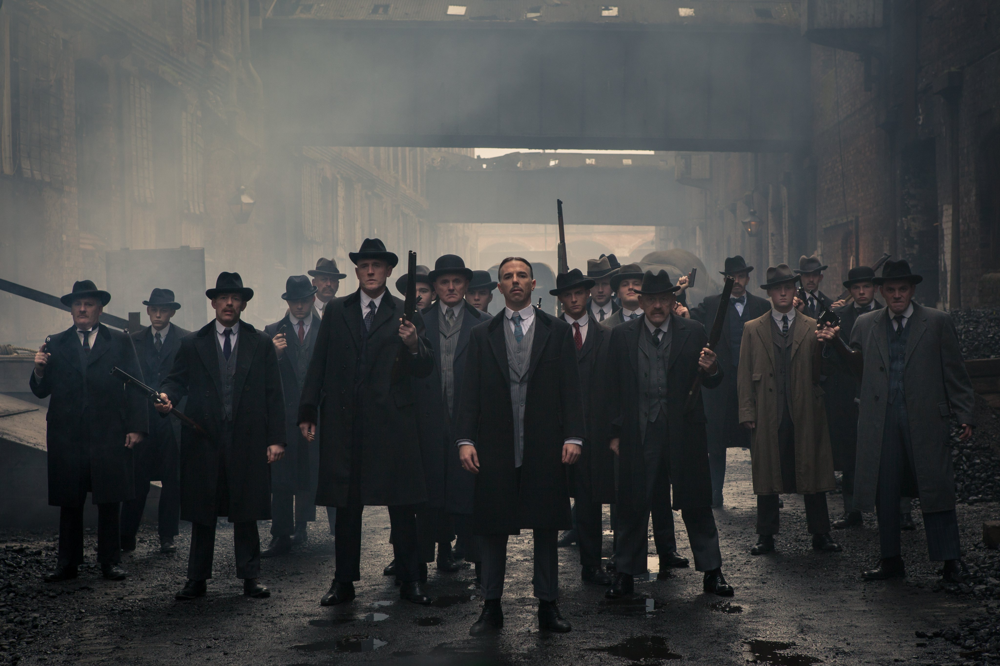
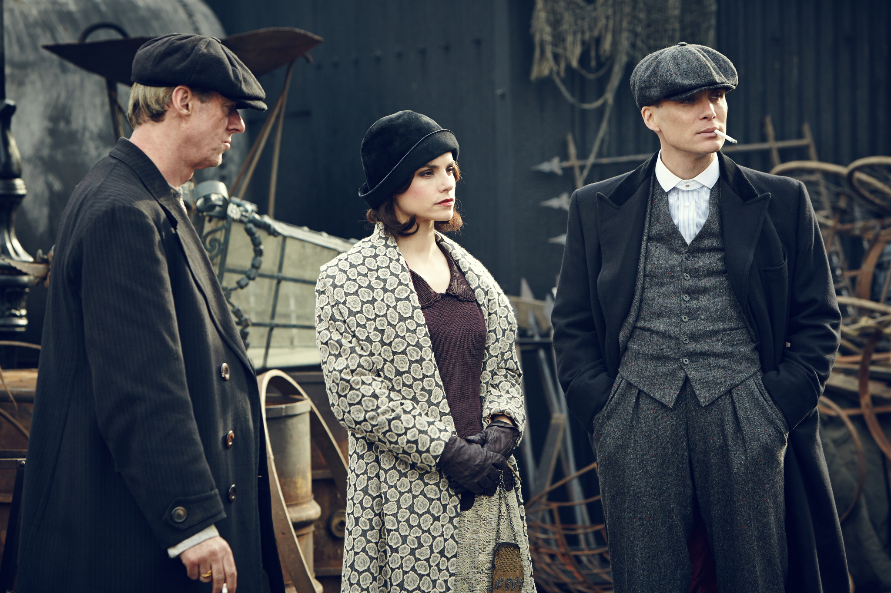
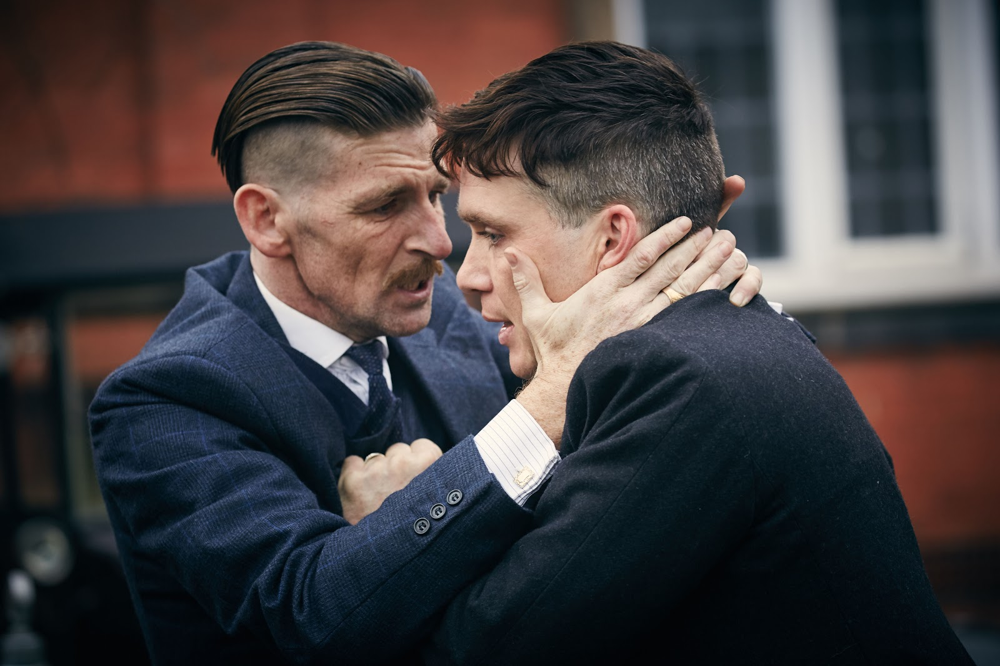
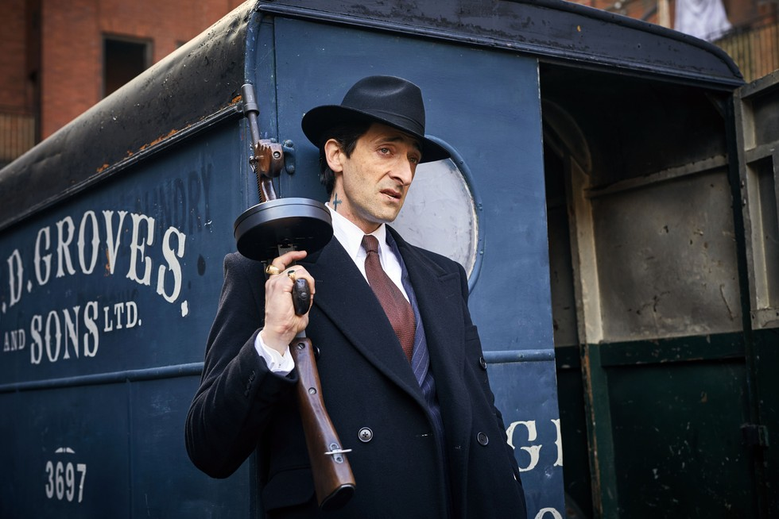
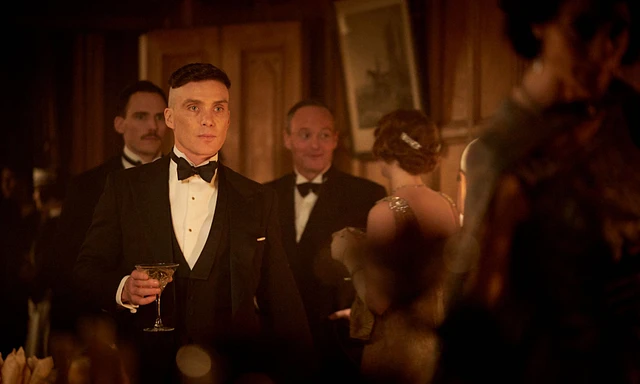
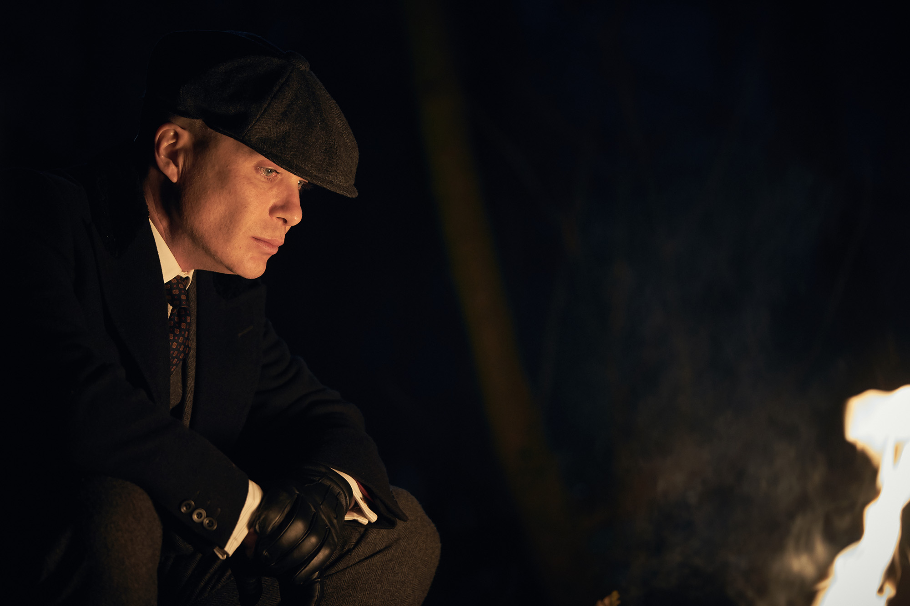

Todo comienza cuando los Peaky Blinders interceptan accidentalmente un cargamento de armas del gobierno. El inspector Chester Campbell es enviado desde Belfast para recuperarlas, mientras Tommy Shelby teje sus planes de ascenso al poder absoluto de Birmingham. Una historia de ambición, traición y supervivencia en el corazón de la Inglaterra de posguerra. La familia Shelby nunca había estado tan cerca de perderlo todo — ni tan cerca de conseguirlo.

Tommy Shelby expande el negocio familiar hacia Londres, donde deberá enfrentarse al gángster italiano Sabini y su control sobre los hipódromos de la capital. Mientras tanto, Grace regresa a su vida complicando sus planes. La familia nunca había estado tan cerca del poder — ni tan expuesta al peligro. Una temporada de expansión, romance y traición en las calles de la capital inglesa.

Tommy se adentra en una peligrosa conspiración que lo lleva a mezclarse con la aristocracia soviética exiliada y los servicios de inteligencia británicos. Mientras su empresa crece y su posición social se consolida, los fantasmas del pasado y los enemigos del presente amenazan con destruir todo lo que ha construido. La temporada más oscura y cinematográfica de la serie.

La mafia italiana llega a Birmingham. Luca Changretta busca venganza contra los Shelby por la muerte de su padre. Tommy debe unir a su familia fragmentada y buscar aliados inesperados — incluyendo al excéntrico Alfie Solomons — para sobrevivir a la guerra más brutal que han enfrentado. Cada Shelby tiene un precio sobre su cabeza.

El crack del 29 sacude al mundo y a los Shelby. Tommy, ahora diputado en el Parlamento, se enfrenta al ascenso del fascismo encarnado en Oswald Mosley. Mientras intenta sabotear al movimiento desde adentro, las tensiones dentro de la familia alcanzan su punto de quiebre. La temporada más política de la serie, con el fantasma de la Segunda Guerra Mundial ya en el horizonte.

La temporada final. Tommy Shelby enfrenta su mayor crisis personal mientras la familia se desintegra desde adentro. Gina Gray y Michael conspiran para tomar el control del imperio. La Segunda Guerra Mundial se acerca y Tommy debe decidir qué queda de él cuando todo lo que construyó se derrumba. Un cierre brutal, íntimo y necesario para una de las sagas más grandes de la televisión británica.